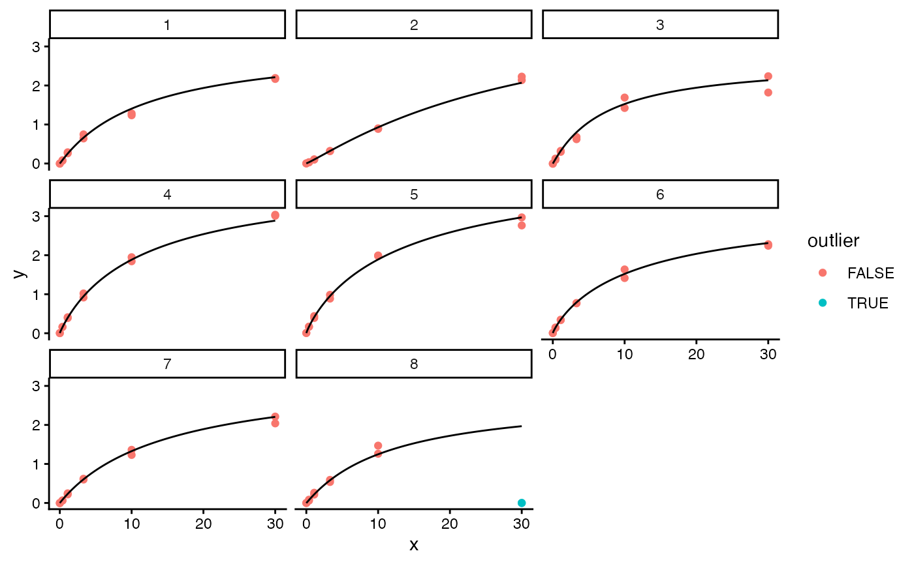
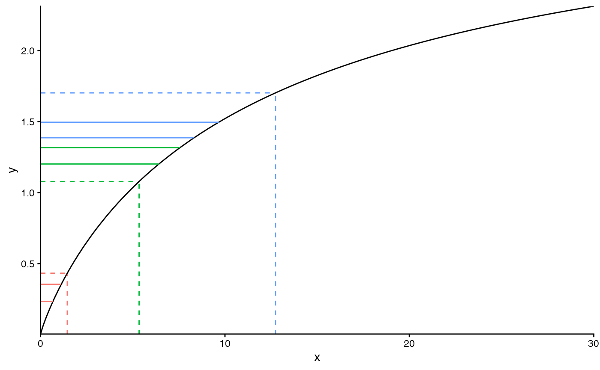
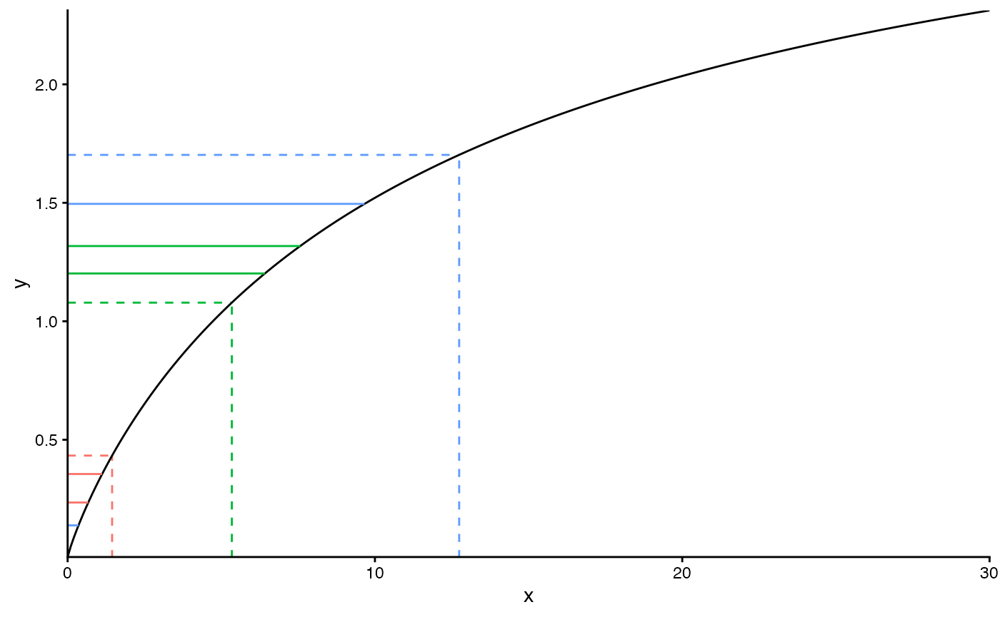
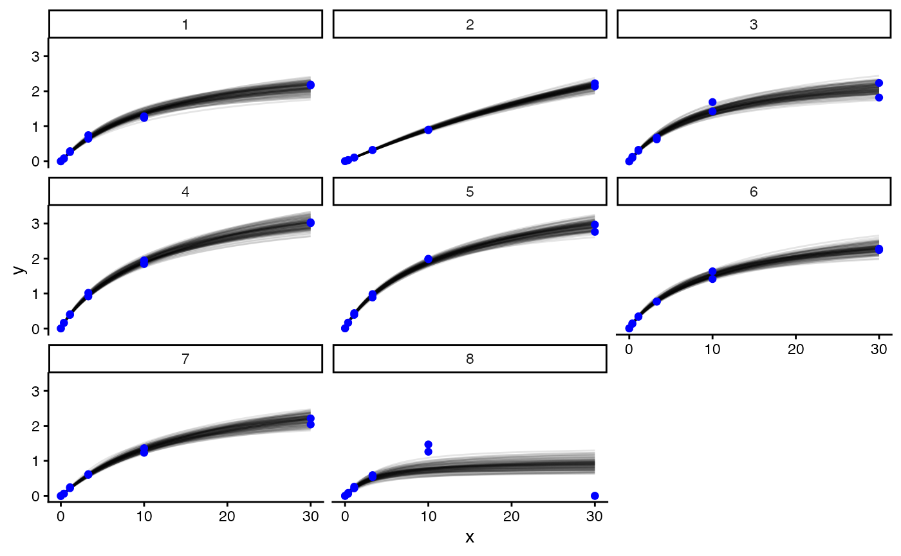

finding_outliers.RmdRead the vignette ‘Basic estimation on simulated data’ before reading this. Here we illustrate how outliers – unlikely data – can be identified.
We simulate data in the usual way, choosing a few arguments for the sake of this example.
data <- simulate_data(seed = 123456,
num_plate = 8,
num_sam_per_plate = 3,
f = c(0.95, 0, 3.33, 2.44))
df_sam <- data$df_sam
df_cal <- data$df_cal
df_plate <- data$df_plate
param_true_values_list <- data$paramsThe code in this section is slightly fiddly, but you’ll never need to do this in a real analysis: we pick some of the simulated data, replace it by bad data, and do some plotting to show how we messed things up. First we arbitrarily choose one of the calibrators to be an outlier: we replace the y value for both of its replicates by 0.
df_cal <- df_cal %>%
mutate(outlier = plate == max(plate) & x == max(x),
y = if_else(outlier, 0, y))
outlier_plate_cal <- df_cal %>%
filter(outlier) %>%
pull(plate) %>%
unique()We plot the calibration data with the true x<->y curves (around which the observations were drawn with normal noise, with x-dependent variance) to help guide the eye.
df_curves_true <- df_plate %>%
select(plate, f_1, f_2, f_3, f_4) %>%
expand_grid(x = seq(0, 30, by = 0.1)) %>%
mutate(y = PL4(log(x), f_1, f_2, f_3, f_4))
ggplot(df_cal) +
geom_point(aes(x = x, y = y, col = outlier)) +
geom_line(data = df_curves_true, aes(x, y)) +
facet_wrap(~plate, ncol = 3) 
We choose one of the sample replicates to be an outlier, though we don’t change its measurement just yet…
df_sam <- df_sam %>%
mutate(.by = id_sam, replicate = row_number()) %>%
mutate(outlier = x == max(x) &
replicate == max(replicate))
outlier_plate_sam <- df_sam %>%
filter(outlier) %>%
pull(plate)…before doing that, we visualise the sample data on the plate with the outlier. In black, we plot the true x<->y curve. In colour, with one colour per sample, we plot three types of line specific to each sample. First, a dashed vertical line at the true x value for each sample on the plate. Second, dashed horizontal lines connecting to those dashed vertical lines at the point of the curve: the y value of each of these lines is the expected (mean) y value for the associated x value. Third, solid horizontal lines at the observed y values (which we simulated by drawing them from around the expected value, i.e. the difference between the solid and dashed horizontal lines is the random observational noise).
df_sam %>%
filter(plate == outlier_plate_sam) %>%
select(x, f_1, f_2, f_3, f_4) %>%
distinct() %>%
ggplot() +
geom_segment(aes(x = x,
xend = x,
yend = PL4(log(x), f_1, f_2, f_3, f_4),
col = as.factor(x)),
y = 0,
linetype = "dashed") +
geom_segment(aes(xend = x,
y = PL4(log(x), f_1, f_2, f_3, f_4),
yend = PL4(log(x), f_1, f_2, f_3, f_4),
col = as.factor(x)),
x = 0,
linetype = "dashed") +
geom_line(data = df_curves_true %>%
filter(plate == outlier_plate_sam),
aes(x, y)) +
geom_segment(data = df_sam %>%
filter(plate == outlier_plate_sam),
aes(y = y,
yend = y,
xend = exp(PL4_inv(y, f_1, f_2, f_3, f_4)),
col = as.factor(x)), x = 0) +
labs(y = "y") +
theme(legend.position="none") +
coord_cartesian(expand = FALSE)
Now we mess up the y value of the outlier sample,
and redo the same plot above. The lower horizontal solid blue line has moved to a much smaller y value — one that is inconsistent with the other one in the pair, and with the true x value (though for real data this is unknown).

Prepare for and run Stan as we did in the simpler vignette.
priors_list <- get_priors()
data_wrangled <- wrangle_data(
df_sam = df_sam,
df_cal = df_cal,
priors_list = priors_list
)
df_sam <- data_wrangled$df_sam
df_cal <- data_wrangled$df_cal
df_plate <- dplyr::left_join(df_plate, data_wrangled$df_plate, by = "plate")
capture.output({
df_posterior <- run_stan(data_wrangled = data_wrangled)
df_prior <- run_stan(data_wrangled = data_wrangled,
distribution = "prior")
})df_posterior has columns named
y_sam_loglik_per_obs[...] where the square brackets contain
an integer index for the sample replicate (defined in
df_sam$which_sam_rep); these contain the log likelihood
(conditioning on all parameters) for each sample replicate. We calculate
the posterior mean of each of these columns, and link each of them to
the corresponding row of df_sam.
df_sam_logliks <- df_posterior %>%
select(starts_with("y_sam_loglik_per_obs["))
df_sam_logliks <- df_sam_logliks[, lapply(.SD, mean)]
df_sam_logliks <- df_sam_logliks %>%
pivot_longer(everything(), names_to = "param", values_to = "loglik") %>%
tidyr::extract(param,
into = "which_sam_rep",
regex = "y_sam_loglik_per_obs\\[([0-9]+)\\]") %>%
mutate(which_sam_rep = as.integer(which_sam_rep)) %>%
left_join(df_sam, by = "which_sam_rep")Which sample replicate has the smallest log likelihood? As you would hope, it’s the one we turned into an outlier:
df_sam_logliks %>%
select(outlier, loglik) %>%
arrange(loglik)
#> # A tibble: 48 × 2
#> outlier loglik
#> <lgl> <dbl>
#> 1 TRUE -2.50
#> 2 FALSE -1.34
#> 3 FALSE -1.03
#> 4 FALSE -0.761
#> 5 FALSE -0.542
#> 6 FALSE -0.463
#> 7 FALSE -0.432
#> 8 FALSE -0.373
#> 9 FALSE -0.344
#> 10 FALSE -0.266
#> # ℹ 38 more rowsdf_posterior has columns named
logprob_f_effects_per_plate[...],
loglik_per_plate_blanks[...],
loglik_per_plate_notblanks[...] where the square brackets
contain an integer index for the plate (defined in
df_plate$plate_int).
logprob_f_effects_per_plate[...] is the log probability of
the plate-specific deviations in the parameters of the f vector (which
parameterises the x<->y relationship).
loglik_per_plate_blanks[...] and
loglik_per_plate_notblanks[...] are the log likelihoods
(conditioning on all parameters) for x=0 and x!=0 calibration
measurements respectively (using the term ‘blank’ to denote a calibrator
containing zero antibody). If the model has struggled to fit a
reasonable looking curve through the set of calibrators on a plate, we
expect the sum of these log probabilities to be lower than usual. So we
add these variables for each plate and take the mean of the posterior
(actually the other way round, which is identical).
df_plate_logliks <- df_posterior %>%
select(starts_with("logprob_f_effects_per_plate["),
starts_with("loglik_per_plate_blanks["),
starts_with("loglik_per_plate_notblanks[")
)
df_plate_logliks <- df_plate_logliks[, lapply(.SD, mean)]
df_plate_logliks <- df_plate_logliks %>%
pivot_longer(everything(), names_to = "param") %>%
tidyr::extract(param,
into = c("param", "plate_int"),
regex = "([a-z_]+)\\[([0-9]+)\\]") %>%
pivot_wider(names_from = param) %>%
mutate(loglik = logprob_f_effects_per_plate +
loglik_per_plate_blanks +
loglik_per_plate_notblanks) %>%
mutate(plate_int = as.integer(plate_int)) %>%
left_join(df_plate, by = "plate_int")Which plate has the smallest such log probability? As you would hope, it’s the one we turned into an outlier:
df_plate_logliks %>%
mutate(outlier = plate == outlier_plate_cal) %>%
select(plate, outlier, loglik) %>%
arrange(loglik)
#> # A tibble: 8 × 3
#> plate outlier loglik
#> <int> <lgl> <dbl>
#> 1 8 TRUE -1.04
#> 2 3 FALSE 15.3
#> 3 1 FALSE 18.5
#> 4 6 FALSE 19.2
#> 5 5 FALSE 19.4
#> 6 7 FALSE 19.9
#> 7 4 FALSE 21.0
#> 8 2 FALSE 29.0We visualise how the model settled on a worse fit for the x<->y relationship for this plate than for all the other plates, by plotting the posterior for the curve alongside the calibration data.
x_range <- seq(min(df_cal$x), max(df_cal$x), length.out = 50)
df_curves_posterior <- df_posterior %>%
select(starts_with("f_per_plate[")) %>%
mutate(sample = row_number()) %>%
filter(sample %% 10 == 0) %>% # downsample for speed
pivot_longer(-sample) %>%
tidyr::extract(name,
into = c("plate_int", "f_index"),
regex = "f_per_plate\\[([0-9]+),([0-9]+)\\]") %>%
mutate(plate_int = as.integer(plate_int),
f_index = as.integer(f_index)) %>%
left_join(df_plate %>% select(plate, plate_int), by = "plate_int") %>%
pivot_wider(names_from = f_index, names_prefix = "f_") %>%
expand_grid(x = x_range) %>%
mutate(y = PL4(log(x), f_1, f_2, f_3, f_4))
ggplot(df_curves_posterior) +
geom_line(aes(x, y, group = sample), alpha = 0.1) +
geom_point(data = df_cal,
aes(x, y), col = "blue") +
facet_wrap(~plate, nrow = 3) 